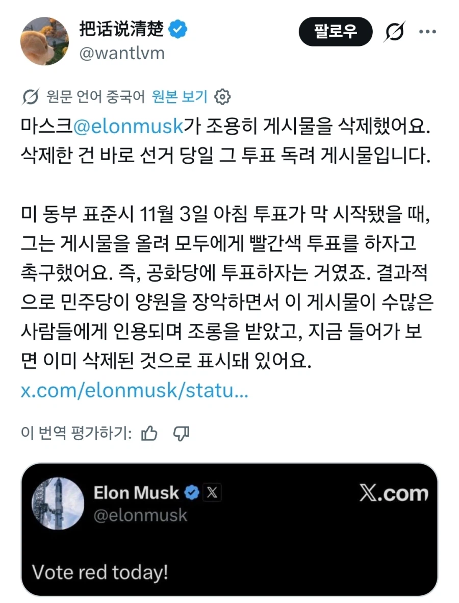

44 · 9 · 34 분 전 · 원문

급하게 한신메타ㅋㅋㅋㅋ
수집 당시 댓글 9개
베레타38 · 43 분 전
진짜 똑똑한 사람인가본데
미국대장 · 42 분 전
자, 이제 레드팀이 누구지
오뒷세이아 · 41 분 전
하남자 새끼 ㅋㅋㅋ
새코코넛 · 41 분 전
???: 저는 불법이민자 출신이어서 민주당 편입니다
유루캠 · 39 분 전
머스크 무과금 ㅋㅋㅋㅋ
탱글탱글프리즈너 · 38 분 전
ㅋ
lllIIlllIIlIIl · 38 분 전
권력이 무섭긴 하지
ㅇㅇㄱㄱ · 34 분 전
공짜점심 · 27 분 전
그냥 둘다 돈대면 안됨?
진짜 똑똑한 사람인가본데